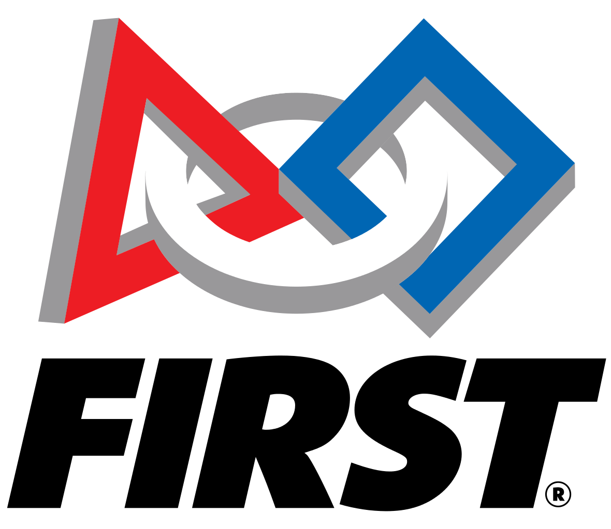

FIRST - For Inspiration and Recognition of Science and Technology The FIRST Robotics Competition is an international robotics competition featuring teams from all over the world, including Israel, Brazil, and China. High school students from 9-12 grade compete to build a robot in a six week time constraint. Each year, teams are challenged to “raise funds, design a team "brand," hone teamwork skills, and build and program industrial-size robots to play a difficult field game against like-minded competitors.” Volunteer mentors guide teams of students to compete in regional competitions and potentially qualify for the international competition in St. Louis, Missouri.
About FIRST®
